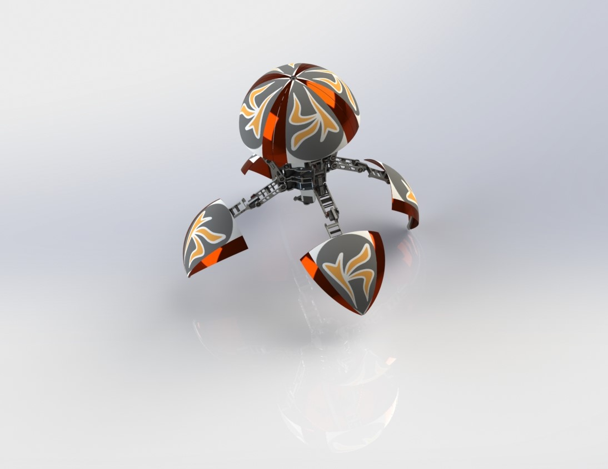
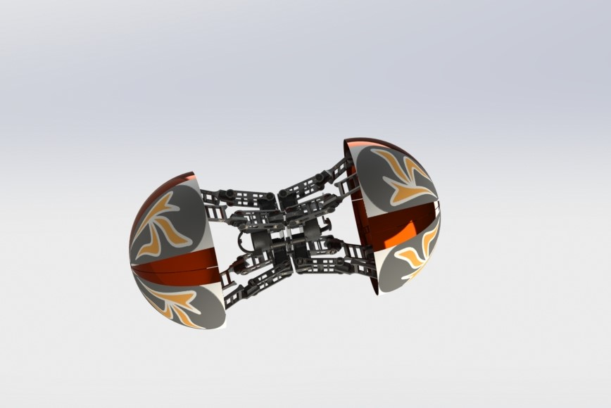
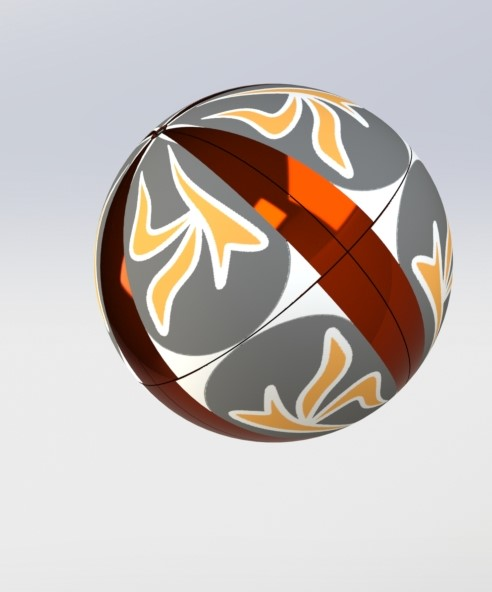

Spinnenroboter-Ball zur Zustellung von Feuerlöschern
Kunde: Herr Madhav Mansuriya
Zeitraum: Juli 2020 – September 2020
Förderung: Startup India Innovation Fund
Beschreibung
Entwicklung und Prototyping eines Spinnenroboter-Balls zur gezielten Zustellung eines CO₂-Feuerlöschballs direkt an den Brandherd. Das System basiert auf einem transformierbaren Achtbein-Mechanismus: Der Roboter kann sich flexibel wie eine Spinne fortbewegen und sich anschließend in eine Kugelform zusammenziehen, um schnell zu rollen — wodurch Geschwindigkeit und Zugänglichkeit in schwer erreichbaren Umgebungen deutlich verbessert werden.
Aufgaben & Verantwortlichkeiten
- Leitender CAD-Konstrukteur: Entwicklung des vollständigen mechanischen Systems vom Konzept bis zum funktionsfähigen Prototyp.
- Konstruktion eines federbasierten Abschussmechanismus zur gezielten CO₂-Ball-Ausbringung.
- Integration der Elektronik: Sensorik, Tracking-Kamera sowie servoangesteuerte Systeme auf Raspberry-Pi-Basis für Navigation und Aktuierung.
- Koordination der Prototypenfertigung mittels fortschrittlicher 3D-Druckverfahren zur Validierung von Mechanik und Elektronik.
Wesentliche technische Details
- Individuell entwickelte mechanische Baugruppen, konstruiert und überprüft in SolidWorks.
- Ausgelegter Federmechanismus für sichere und zuverlässige CO₂-Ball-Auslösung.
- Servoangetriebene Mehrfreiheitsgrad-Gelenke (Multi-DOF) für spinnenartige Fortbewegung und schnelle Transformation in die Kugelform.
- Implementierung der vollständigen Aktorik- und Steuerlogik auf Basis eines Raspberry-Pi-Mikrocontrollers.
Wesentliche Ergebnisse
- Entwicklung und Test eines funktionsfähigen Prototyps mit zuverlässiger Bewegung und Feuerlöschball-Deployment unter kontrollierten Bedingungen.
- Präsentation vor Förderinstitutionen mit positiver technischer Bewertung und Unterstützung.
Visualisierungen
Design-Renderings



